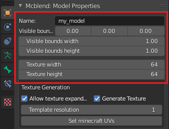

Basic operators
All of the basic operators are in the sidebar.
Importing models
This panel is used for importing bedrock models from JSON files.

Usage
- Press the "Import model" button.
- Set the import properties on the right side of the file explorer.
- "Geometry name" lets you specify the name of the model that you want
to import from the file. You can leave it blank to import the first
model from the list. Don't add
geometry.prefix to the model name (it's added automatically). - "Replace bones with empties" checkbox decides whether the model should be imported using empties to represent Minecraft bones (checked) or an armature and bones (unchecked, default value).
- "Geometry name" lets you specify the name of the model that you want
to import from the file. You can leave it blank to import the first
model from the list. Don't add
- Find the model file in the file explorer and press import model to finalize the importing.

The import model operator can also be accessed via File -> Import menu.
Exporting models
The "Export models" panel is used to export models. You can set the
name and visible model bounds here. Exported model will automatically add
the geometry. prefix to the name so you don't have to do that.

Usage
- Select all of the objects that you want to export.
- Insert the name of the model.
- Press the "Export model" button.
- Choose the output path in the file explorer window.
The export model operator can also be accessed via File -> Export menu.
Exporting animations
Exporting animations is done with "Export bedrock animations" panel.
Note
Mcblend exports animations using key frames. Molang is not supported.
Blender let's you implement various dependencies between animated objects with constraints and rigging. This means that animating one object can affect movement of another object even if the second object doesn't have any key frames. That is why the key frames in Blender animations aren't directly translated to key frames in Minecraft animations. Mcblend collects the time stamps of every keyframe of every selected objects and goes through that list looking for movements. Every movement of every object between two frames is saved to exported file.
Non-linear animations (NLA) are also supported even though Blender doesn't let you view the exact times of the key frames from animation strips on a timeline.

Usage
- Create new animation with "New animation" button (some of the parts of panel won't be visible until you have an animations). You may have as many animation settings saved as you want and you can switch between them with "Select animation" dropdown menu.
- Select the objects to export in the 3d viewport.
- Fill in the form with the information about the animation.
- Name - the name of the animation.
- Skip rest poses - whether the bones in rest poses should be exported as a part of animation. A rest pose is a pose with default location, rotation and scale. This setting typically significantly reduces the size of the exported animation.
- Export as pose - exports current frame as a looped animation with a pose instead of exporting full animation.
- Loop - whether the animation should be looped.
- anim_time_update - the content of this text field is copied to "anim_time_update" property of the Minecraft animation. If you leave it blank the the animation won't use the anim_time_update.
- Press the "Export animation" button.
Note
The time of the animation is determined by the time of animation that you can set in the timeline. The animations should always start at frame 1. Frame 0 should have the model in the default pose.
UV-mapping
UV-mapping is performed via "Set bedrock UVs" panel. You can also use this panel for generating textures.

Usage
To perform the UV-mapping fill in the form and press the "Set Minecraft UVs" button.
- Texture width - the texture_width property of the Minecraft model.
- Texture height - the texture_height property of the Minecraft model.
- Allow texture expanding - whether the texture can be expanded if there is no space for UV-mapping.
- Generate Texture - whether the operator should generate a texture ( the name of the created texture is always "template")
- Template resolution - Sets the resolution of the template texture. This value describes how many pixels on the image is represented by one texture_widht or texture_height unit in the model definition. The value 1 gives the standard Minecraft texture resolution. Higher values can be used to create "HD textures".
You can adjust the UV-mapping using UV-groups to get best.
Note
After the UV mapping, you can still go to the UV editor and move everything to your liking. This operator tries to arrange the UVs of the selected objects on the texture space using the basic non-per-face Minecraft UV-mapping. If you move the UV in such a way that it cannot be mapped in standard Minecraft UV-mapping way than mcblend will detect that and uses per-face UV mapping.
Don't move individual vertices of the faces on the UV unless you know what you're doing. The faces on the UV must remain rectangles, or the UV of the exported model may have unexpected shapes.
Other operators
The "Operators" panel gives access to operators that modify various properties used by Mcblend.
Toggle mirror for UV mapping
Toggles the mirror property of selected objects.
The mirror property affects the process of UV-mapping. Objects with this property are mapped as if they had the Minecraft mirror property. Using this operator doesn't remap the UV. If you want to change the UV of the object, you must also use the operator from the Set bedrock UVs panel to update the UVs.
Fix invalid cube UV
Fix invalid cube UV operator - as the name suggests - is used to fix invalid UV-mapping of the cubes. All faces of the cubes in the Minecraft model must be rectangular and have certain rotation. This operator ensures that this conditions are true. It's particularly useful when you get an error message which says that certain object has invalid UV-mapping and is impossible to export.
Note
This operator affects only the selected objects with Cube mesh type.
Set the UV group
Adds selected objects to one of the existing UV-groups.
Clear the UV group
Removes selected objects from UV-groups.
Toggle export as bones
Toggles the export bone property of selected objects.
Objects with this property are always exported as bones. Mcblend usually tries to export most meshes as cubes and groups them together with some parent object that becomes a bone. If you want to mark a certain cube as an independent bone, you need to use this operator.
Note
The best way of using Mcblend is to have one rig for the model and parenting the meshes to bones of that rig. This allows you to take the advantage of features like inverse kinematics and also creates a model in which it's really easy to distinguish which Blender object becomes what in Minecraft model. Bones will be translated into Minecraft bones and meshes into cubes. If you add some empties without children they will become the locators.
Inflate
Inflates the selected object using Minecraft inflate property.
Running this operator opens a panel in the bottom left corner of the 3D viewport. You can use this panel to adjust the "inflate" value.

Round dimensions
Rounds the dimensions of the object in such way that they become integers in exported Minecraft model.
Separate cubes
Separate cubes can detect cubes grouped in a single mesh and separate them into multiple objects. Unlike the Mesh: Separate operator (vanilla blender operator), the Separate cubes from Mcblend is designed for working with cuboids and can detect their rotations. This is important because the cubes (meshes) of the models from Mcblend must be aligned to rotations of the object that contain them.
Note
If you happen to have a mesh with single cube rotated in edit mode (mesh not aligned to object rotation), you can use this operator to fix the problem. The operator won't create new objects if there is only one cube in the mesh but it will fix the rotation problem.
Images below show the difference between applying Separate cubes and Mesh: Separate operators:
Before separating cubes:

After separating cubes:
Separated objects after using default blender Mesh->Separate operator: